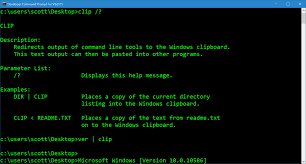
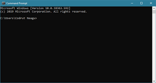

Hello Tricia, if you've ever wished to know or track your boyfriend's activities, then You Have Come To The Right Page.
I'LL SHOW YOU HACKING TRICKS
Here, you will learn how to hack the following:
WIFI
WHATSAPP
FACEBOOK
INTRODUCTION TO HACKING
What is Hacking?
Hacking is the activity of identifying weaknesses in a computer system or a network to exploit the security to gain access to personal data or business data. An example of computer hacking can be: using a password cracking algorithm to gain access to a computer system.
LETS GET YOU STARTED!
We will start with the simplest!
HACKING A WIFI PASSWORD
Grab your laptop and lets get started!
.
On your laptop, look for the Command Prompt window and run it as adminstrator. it should look something like this;
 
The Command Prompt uses command keys to access or operate a computer
On CP window, enter this command: netsh wlan show profile
Then type netsh wlan export profile folder=C:\ key=clear and hit enter
This will save the entire information in the Local Disk folder of your computer
.
Now for the final moment. Open the Local disk folder and click on any of the saved wifi file and open it using notepad
THE WIFI PASSWORD WILL SHOW WHERE IT IS WRITTEN "Key Material"
WARNING!
Do Not Show This To Children
ALRIGHT LETS MOVE ON TO HOW;
TO HACK WHATSAPP
Whatsapp is not easy to HACK. This is because there are many versions of whatsapp.
To successfully Hack into someone's Whatsapp;
First off, identify the version of Whatsapp someone is currently using
After that, study the weaknesses of the version identified
I know you Tricia, you don't like the word "STUDY". But please try to and catch your boyfriend cheating. You can use your phone.
HERE ARE SOME OF THE WHATSAPP VERSIONS AND THEIR WEAKNESSES